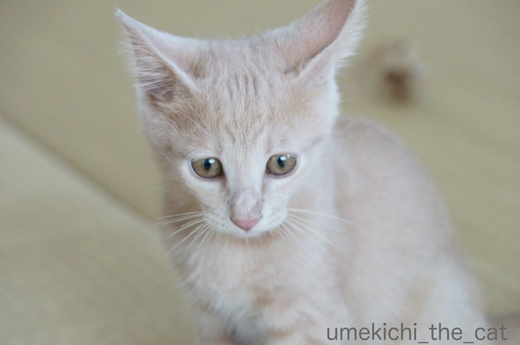
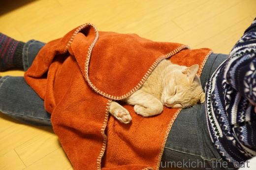
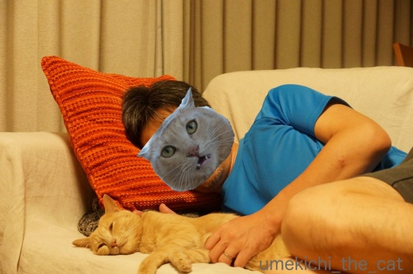
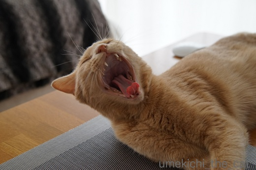
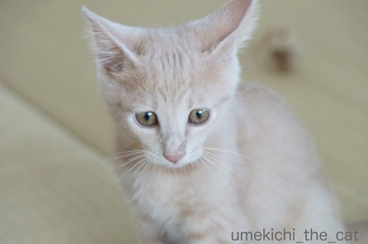
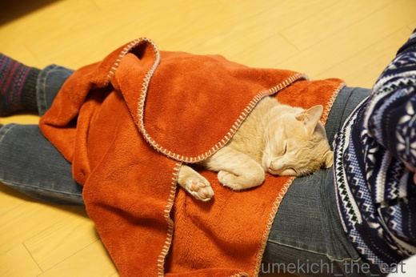
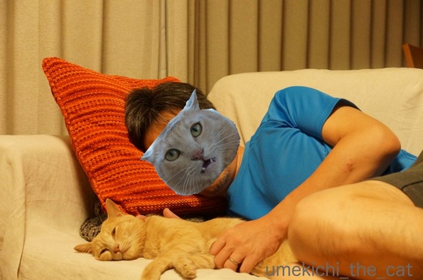
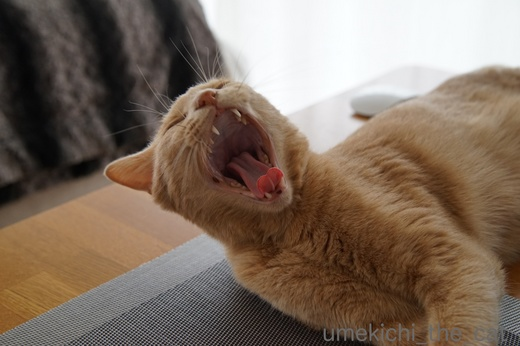

２回目のうちの子記念日＆ブログ１周年 [梅吉]
今日、7月26日は梅吉が我が家にやって来た2回目のうちの子記念日です![[ぴかぴか（新しい）]](https://blog.ss-blog.jp/_images_e/150.gif)
ねこの保護活動をしているNPO法人の里親会に出かけたのが7月19日。
引き取るのはどの子でも良かったのですがそんな答えじゃ主催者側も困っちゃうだろうから
第一希望（！！）仮名：みかんちゃん（メス）
第二希望（！！！）仮名：小太郎くん（オス）にエントリー。
翌日保護団体から「小太郎をお願いしたい」と連絡があり
この「小太郎くん（仮）」が我が家の梅吉となりました(๑˃̵ᴗ˂̵)و

梅吉きたーーーーーっ！（既出の写真ですが）
ちっさ〜い、はかなげ〜Ｏ(≧▽≦)Ｏ でも、イカ耳w
怯えるでも隠れるでもなく「ようおこし！」のささみをパクパク食べて
（お届けしてくれたNPOの方は、食が細い、って言ってたんだけど^^;）

用意したトレイに早速おしっこをして
私の横の椅子に置いた毛布の上でスヤスヤ眠り始めました。
大物やな。

やんちゃに遊びまわって

冬はぬくぬくとお膝の上で
（12秒です）
今時の子らしく動画を楽しんで
![[猫]](https://blog.ss-blog.jp/_images_e/101.gif) じぶんがいっちゃんすっきやねん！
じぶんがいっちゃんすっきやねん！

夏でも家族にくっついて
（19秒です）
お水遊びを楽しんで

一人の時はのびのびと。

こんなにあどけなかった梅吉は

遊んで欲しいのにいつまでも写真を撮っているおかーさんにふて顔を見せる様になりました(≧艸≦)
そして昨年の梅吉うちの子記念日にスタートしたこのブログも１周年となりました。
たくさんの方にnice!やコメントをいただいて本当にありがたいことです。
今後もあまり代わり映えのしない梅吉話のブログになりますがどうぞよろしくお願い致します。
梅吉さんからも一言。

よろしくにゃーーーーーー！
 ↑ガブッと一押し↑
↑ガブッと一押し↑
梅吉には保護団体の方が仮の名として付けてくれた「小太郎」などどいう幼名があったのです。
戦国武将みたいでしょう＾＾
「梅！」「梅吉！！」と呼ぶと鳴きませんが盛大なおしっぽぶんぶんの返事が返って来ます。
「小太郎くん！」と呼んでも反応はないので自分は「梅吉」と思っている様です＾＾
里親会で引き取りたいにゃんことしてエントリーした「小太郎くん」と「みかんちゃん」。
実は第一希望は「みかんちゃん」でした・・・・・Σ(ﾟ◇ﾟ；)
先代のオス猫が腎臓系の病気でひともにゃんこも大変な苦労をしたので
腎臓系の病気のリスクの少ないメス猫を飼いたいという思いと
みかんちゃん、子にゃんこながら大変な美猫ちゃんだったので・・・ (⌒_⌒;
一方、人が怖くてケージの隅で固まっている子にゃんこが多い中
小太郎くんはケージの中で「あー、わしのかぞくになるのはだれや？」と
悠然と構えていたのと困っていないのに困り顔が印象的でした＾＾
私がそっとケージに指を入れると鼻チューしてくれたので
オスにゃんこは避けたいはずだったのに思わずエントリー。
鼻チューの魔法が効いたのか梅吉は我が家にやって来ることになったのでした。
後日、里親会を主催したNPO法人のブログでみかんちゃんがNPO法人が運営する猫カフェに
「勤務」していることを知りました。
おそらくトライアル（にゃんこがその家に馴染めるかお試し期間みたいなもの）
がうまく行かずに猫カフェに「勤務」しながら再度お家を探すことになったのだと思われます。
その後、みかんちゃんがどうしているのかはわかりません。
自分のお家で幸せに暮らしていることを願うばかりです。
もしもみかんちゃんがうちに来ていたら今頃は「みかん箱」とかいうブログを綴っていたかもしれません。
以前ブログでちょっと触れたことがあるのですが、梅吉を引き取る一月くらい前に
近所をうろついていた子にゃんこを捕獲しようとして上手く行かなかったこともありました。
その子がうちに来ていたらブログの様相もまた違ったものになっていたでしょう。
数々の偶然？必然？の出来事が重なって我が家にやって来た梅吉。
天の采配か猫神様のきまぐれか。
いずれにしても「我が家に梅吉を遣わしてくださって本当にありがとうございます」です。
ねこの保護活動をしているNPO法人の里親会に出かけたのが7月19日。
引き取るのはどの子でも良かったのですがそんな答えじゃ主催者側も困っちゃうだろうから
第一希望（！！）仮名：みかんちゃん（メス）
第二希望（！！！）仮名：小太郎くん（オス）にエントリー。
翌日保護団体から「小太郎をお願いしたい」と連絡があり
この「小太郎くん（仮）」が我が家の梅吉となりました(๑˃̵ᴗ˂̵)و

梅吉きたーーーーーっ！（既出の写真ですが）
ちっさ〜い、はかなげ〜Ｏ(≧▽≦)Ｏ でも、イカ耳w
怯えるでも隠れるでもなく「ようおこし！」のささみをパクパク食べて
（お届けしてくれたNPOの方は、食が細い、って言ってたんだけど^^;）

用意したトレイに早速おしっこをして
私の横の椅子に置いた毛布の上でスヤスヤ眠り始めました。
大物やな。

やんちゃに遊びまわって

冬はぬくぬくとお膝の上で
（12秒です）
今時の子らしく動画を楽しんで

夏でも家族にくっついて
（19秒です）
お水遊びを楽しんで

一人の時はのびのびと。

こんなにあどけなかった梅吉は

遊んで欲しいのにいつまでも写真を撮っているおかーさんにふて顔を見せる様になりました(≧艸≦)
そして昨年の梅吉うちの子記念日にスタートしたこのブログも１周年となりました。
たくさんの方にnice!やコメントをいただいて本当にありがたいことです。
今後もあまり代わり映えのしない梅吉話のブログになりますがどうぞよろしくお願い致します。
梅吉さんからも一言。

梅吉には保護団体の方が仮の名として付けてくれた「小太郎」などどいう幼名があったのです。
戦国武将みたいでしょう＾＾
「梅！」「梅吉！！」と呼ぶと鳴きませんが盛大なおしっぽぶんぶんの返事が返って来ます。
「小太郎くん！」と呼んでも反応はないので自分は「梅吉」と思っている様です＾＾
里親会で引き取りたいにゃんことしてエントリーした「小太郎くん」と「みかんちゃん」。
実は第一希望は「みかんちゃん」でした・・・・・Σ(ﾟ◇ﾟ；)
先代のオス猫が腎臓系の病気でひともにゃんこも大変な苦労をしたので
腎臓系の病気のリスクの少ないメス猫を飼いたいという思いと
みかんちゃん、子にゃんこながら大変な美猫ちゃんだったので・・・ (⌒_⌒;
一方、人が怖くてケージの隅で固まっている子にゃんこが多い中
小太郎くんはケージの中で「あー、わしのかぞくになるのはだれや？」と
悠然と構えていたのと困っていないのに困り顔が印象的でした＾＾
私がそっとケージに指を入れると鼻チューしてくれたので
オスにゃんこは避けたいはずだったのに思わずエントリー。
鼻チューの魔法が効いたのか梅吉は我が家にやって来ることになったのでした。
後日、里親会を主催したNPO法人のブログでみかんちゃんがNPO法人が運営する猫カフェに
「勤務」していることを知りました。
おそらくトライアル（にゃんこがその家に馴染めるかお試し期間みたいなもの）
がうまく行かずに猫カフェに「勤務」しながら再度お家を探すことになったのだと思われます。
その後、みかんちゃんがどうしているのかはわかりません。
自分のお家で幸せに暮らしていることを願うばかりです。
もしもみかんちゃんがうちに来ていたら今頃は「みかん箱」とかいうブログを綴っていたかもしれません。
以前ブログでちょっと触れたことがあるのですが、梅吉を引き取る一月くらい前に
近所をうろついていた子にゃんこを捕獲しようとして上手く行かなかったこともありました。
その子がうちに来ていたらブログの様相もまた違ったものになっていたでしょう。
数々の偶然？必然？の出来事が重なって我が家にやって来た梅吉。
天の采配か猫神様のきまぐれか。
いずれにしても「我が家に梅吉を遣わしてくださって本当にありがとうございます」です。
2017-07-26 17:36
nice!(70)
コメント(34)

カフェオレ色の梅吉

梅吉 2023年8月10日 永眠


梅吉と出会った譲渡会

犬猫の理由なき殺処分ゼロ
妄想広告
UMEKICHI 光

爆発的に早い！
時々攻撃的！
Thanks to Mr.Boss365
爆発的に早い！
時々攻撃的！
Thanks to Mr.Boss365

先生の小さい頃、可愛いねぇ～、もちろん今もイケメンですが・・・
まずは、一周年おめでとうございます。
これからも何卒よろしくお願いいたします。^^
by KENT0mg (2017-07-26 18:26)
2回目のうちの子記念日とブログ一周年おめでとうございます。
いつもちぃさんの愛情いっぱいな記事を見ていると、梅吉さんも本当にこのお家に来て良かったーと言ってるはずです。こういうの絶対何か不思議なご縁があると思います。どの子にも良いご縁があるといいですね。
by zombiekong (2017-07-26 18:55)
ブログ一周年、おめでとうございます。
梅吉さんのちっちゃい頃、あどけなさが可愛いですね。
猫が好きな人にはいろんなドラマがあるんですね。
これからもよろしくお願いいたします。
by riverwalk (2017-07-26 19:45)
梅吉さん♪
うちの子記念日＆ブログ一周年おめでとぉ～ございます(*^_^*)
梅吉さんは小さいころから大物ぶりを発揮していたのですね！
にゃんこは水が苦手と聞きますが
お風呂場でお水をおててでチョイチョイする姿も可愛らしいです！
梅吉さんをご家族の迎えられて
梅吉さんもご家族も幸せになりましたね(^^♪
また一年、元気な梅吉さんの日々を
楽しみしております(*^_^*)
by きぃ (2017-07-26 20:01)
2回目のうちの子記念とブログ1周年お目出度うございます！
梅吉さん大あくびですね(^^)
by ma2ma2 (2017-07-26 20:33)
ウチの子記念日＆ブログ1周年、おめでとうございます＼(^o^)／
いきなりチューでちぃさんを虜にするなんて、よっ！色男梅吉！！
これからも元気に、ブログにやってくるお客さんたちを和ませてくださいね(^_-)-☆
楽しみに遊びにこさせていただきます♪
by ゆきち (2017-07-26 20:54)
梅吉さんのうちの子記念日
＆ブログ1周年おめでとうございます！
幼い梅吉さん、あどけないお顔。^^)
運命の出会い、ありますよねー。
by yes_hama (2017-07-26 21:12)
梅吉君のうちの子記念日、ブログ開設1周年、
おめでとうございます！
出会いの様子がよくわかりました。
シャンプーが平気の梅吉君は、水遊びまでするのですね。
梅吉君、今後ともよろしくにゃー！
by うめむす (2017-07-26 21:51)
ウチの子記念日＆ブログ1周年、おめでとうございます。
ちぃさん家に子ニャンコが増えたのかと思いました。
ちっこい梅吉さん、可愛いですね〜
積極的アプローチでちぃさんをゲットできて、梅吉さん良かったね〜
ちぃさん家に福を運んできた梅吉さん、ブログを訪問するみんなも
福のおすそ分けに預かっていますよ。
by kiki (2017-07-26 21:53)
1周年とうちの子記念日おめでとうございます！縁ってわからないですよね。梅吉くんと家族になってのも何か縁があったからでしょうね。きっと赤い糸がつながっていたのでしょうね。みかんちゃんも素敵な家族とくらしているといいですね～
by みぃにゃん (2017-07-26 22:22)
梅吉さん、うちの子記念日おめでとう♪
とっても優しい家族にめぐり会えて良かったね＾＾
by ぽちの輔 (2017-07-27 07:00)
家の猫が逝ってしまってから4ヶ月経ちますが、来年になったら子猫をさがそうかな、と思うようになりました。
by kou (2017-07-27 08:01)
うちの子記念日おめでとうです！
やっぱり運命とか巡り合わせってあると思いますよね。
梅吉君は、ちぃさんのところに来るべくして来たんだと思うー^^
そっか、仮の名前は小太郎くんだったのね。
うちは、あおが「グーグー」で、うみが「バンバン」でした(笑)
その後うみは、女の子だって分かったらしく「バンビ」ちゃんに名前が変わったんだってｗ
みかんちゃん、自分のおうちで幸せに暮らしてるといいですね^^
by リュカ (2017-07-27 10:25)
うちの子記念日＆ブログ開設１周年おめでとうございます!(^^)!
梅吉くんとちぃさん達はちょっとやそっとでは切れない
ぶっとい赤い注連縄で結ばれてたんですよぉ(^O^)
鼻チュー、これはもういちころですねぇ(^-^)
えぇ、私もノエルに耳を舐められた瞬間、「連れて帰る」って叫びましたモンｗ
みかんちゃん、優しい家族と幸せにくらしてますように<(_ _)>
by ニッキー (2017-07-27 12:06)
KENT0mgさん＞ようやく一周年です！先輩ww
小さい頃の梅吉は本当にキュートでしょー(≧▽≦)
これからはますますイケメンに、そしてダンディになる予定なので
今後もどうぞよろしくお願い致しますm(_ _)m
zombiekongさん＞昨夜「梅吉〜、我が家の居心地はどうなのよ〜？」
と聞いてみたところ「・・・・・・」だったので
特に問題はないと理解しましたよ(≧艸≦)
梅吉が我が家にやって来た巡り合わせを大切に
そしてこのブログに遊びに来てくださる皆さんとのつながりも大切に
と思っております。
今後もどうぞよろしくお願い致しますm(_ _)m
riverwalkさん＞子猫から猫を飼うのは三匹目なのですが
梅吉は「子猫ってこんなだったっけ！？」というくらい個性豊かで
ありとあらゆるいたずらをしてくれました^^;
飼うまでの経緯もですが飼ってからもドラマ、有り有りですww
これからもそんな梅吉の日常をあまり肩を張らずに更新できたら
と思っております。
これからもどうぞよろしくお願い致しますm(_ _)m
きぃさん＞我が家に来た時からお膝に乗って来て
当然の様にベットで一緒に寝て・・・・・・
「私、産んだっけ・・・？」というくらい
我が家に馴染んで大物ぶりを発揮しておりました(*>艸<)
梅吉は我が家に来るべくして来たんだなと実感せずにはいられません！
私も元気な梅吉の日常を楽しくお伝えできる様にがんばりま〜す。
今後もどうぞよろしくお願い致しますm(_ _)m
ma2ma2さん＞まだまだブログひよっこで〜す＾＾
「あご、はずれる〜っ！」というくらいの元気なあくびを
みなさんにご披露しちゃいましたww
今後も梅吉共々よろしくお付き合いくださいねm(_ _)m
ゆきちさん＞そうか〜、梅吉はおばちゃんキラーだったんだ！
あの若さでそんなツボを押さえていたとはやるな！色男梅吉(≧艸≦)
２歳を過ぎていっときに比べるとかなり行動が落ち着いたとはいえ
まだまだやんちゃな梅吉です。
これから先どんな楽しい行動をしてくれるのか私も楽しみであります(≧▽≦)
今後も梅吉をどうぞよろしゅうご贔屓にm(_ _)m
yes_hamaさん＞梅吉とは本当に運命の出会いだったと思っています。
私たちが出かけた里親会は我が家から電車で30分くらいかかるところなんです。
家の近所でも里親会は開かれていたのですがどうしてわざわざ遠くまで
でかけたのかなーって。
今思うとその時点から猫神様のお導きがあったとしか思えません！
今後も梅吉をどうぞよろしくお願い致しますm(_ _)m
うめむすさん＞まずは一年の壁をクリアしました！
２〜３日に一度の更新、自分では上出来かなと思っております。
梅吉はお水を嫌がらないんですよ〜。
幼い頃はよく残り湯がある浴槽に落ちていましたしwwwww
夏のうちに子供が遊ぶビニールプールを買って
水遊びさせてみようかとも思ってます。
今後も梅吉をどうぞよろしゅうご贔屓にm(_ _)m
kikiさん＞子ニャンコ・・・・・いいですよね。じゅるっ・・・・・
どうやら私は梅吉にゲットされてしまったようです！梅吉、目が高い！(≧艸≦)
この2年梅吉は本当に「楽しい」という福を我が家にたくさん運んで来てくれました。
これからも下僕二人は梅吉がのびのびと色んなことをしでかせる様に
誠心誠意お仕えしたいと思っております。
今後も梅吉をどうぞよろしゅうご贔屓にm(_ _)m
みぃにゃんさん＞梅吉との出会いは本当に「縁」だなぁと思っています！
みかんちゃんには我が家ではなく「縁」のある本当に家族と
幸せに暮らしていると信じて、願っています。
今後も梅吉をどうぞよろしゅうご贔屓にm(_ _)m
ぽちの輔さん＞「おとーさんとおかーさんはよっぱらって
むりやり ちゅー とかせえへんかったら ええひとなんやけどなぁ」
という梅吉のつぶやきが聞こえて来そうです・・・(≧艸≦)
人一倍溺愛しているのでついつい^^;
今後も梅吉と拙ブログをどうぞよろしくお願い致しますm(_ _)m
kouさん＞わぁぁ〜！ぜひぜひ！！子猫をお迎えくださいませ＾＾
にゃんこはそれと悟られない様にお着替えをして飼い主のところに
戻って来るといいますから・・・・・
「その時」私も楽しみに待っていま〜す。
今後も梅吉をどうぞよろしくお願い致しますm(_ _)m
リュカさん＞うんうん！本当に梅吉は我が家に来るべく母猫とはぐれて
保護されて、里親会に出て・・・・・天の定めですよね。
今こうしている間にも次々現れる保護猫や
ペットショップで売られている動物たち。
どの子も本当のお家が見つかる運命であります様に！！
あおくんの「グーグー」くんはかわいい♪うみちゃんの「バンバン」ちゃんってwww
保護活動してる方達も名前考えるの大変なんだろうな〜。
梅吉を保護してくれた団体は名前を使いまわしていて
梅吉は何代目かの小太郎くんだったのでしたw
みかんちゃん、涼しいおうちでヘソ天してるはずよ(^_－)☆
話題横入り、わたしもフリーザー捕まえたいんだけど出会えない。
今月31日までよね？ゲット出来るかな・・・・・
ニッキーさん＞はい。我が家と梅吉を繋ぐ糸（？）は力自慢の男性が
２〜３０人で力を合わせて縒ったぶっとい赤い注連縄に間違いありません！
鼻チューもたまりませんが「耳舐め」にはイチコロですねっ(≧▽≦)
ノエルさんすごい技をお持ちでいらっしゃるww
みかんちゃんはいまごろ
「おかあさん、ごはんまだー」って言ってるはずです(^_－)☆
by ちぃ (2017-07-27 16:27)
うちの子記念日、おめでとうございます(^^)
｢子猫と毛糸｣って感じの写真、カレンダーみたい〜。ステキ。
お水が捕まえられないのね〜カワイイ〜。
うちの王子はワンコの保護をしているNPO法人の方の個人保護にゃんです。
当時一緒に保護されたネコ様達も幸せになっていると良いなぁ、って
よく考えます。
by も〜 (2017-07-27 16:57)
なんかいろいろおめでとうございます＾＾
梅吉さんはちっさい頃から可愛いのねー
時の流れは早いものですなあ（遠い目）
by じゅらまろ (2017-07-27 17:03)
うちの子記念日＆ブログ開設１周年おめでとうございます！
梅吉さん、そんなに若いんだ～＾＾
小さい頃はまた格別に愛らしいー！
男の子の腎臓のリスク、わかります‥うちも15年のうち３分の１は苦労しました。でも若いうちから気をつけるとリスクが減るんじゃないかな？
鼻チューが運命を決めたのですね！
最初から、ボクのうちって、わかってたんでしょうね～＾＾
幸せな日々が続くお幸せ＾＾
by sana (2017-07-27 18:47)
梅吉さんうちの子記念、
ブログ記念
おめでとうございます。
水遊び動画かわいい♪
今はすっかりりりしい感じですね。
by ふにゃいの (2017-07-27 19:30)
2回目のうちの子記念日。そして、ブログ一周年おめでとうございます。
小さい梅吉くん、可愛い～っ♪そして大物！！
鼻チューで、梅吉くんがちぃさんのお家を選んでくれたのかな？
故の安心感。
猫っかわいがりされてる梅吉くんを見るのが大好きよ～(#^^#)
猫が好きだと、外猫ちゃんの事も気になって仕方無いのよね。
私も何度も捕獲に挑戦しているけどお家に迎えられたのはポロンだけ。
みんな私の手をすり抜けてしまった～。
みんなの出会いエピソードを聞くとね。
自分とはご縁のなかった子たちも、別の誰かと赤い糸が繋がってて
運命の出会いが待っていたのかなと思えてうれしいんだ。
そしてそのお家で、やっぱり出会えたことを感謝されてて。
猫っかわいがりされてるの。
うちの子記念日。万歳だねっ！！みんなが幸せでありますように～！
by emi (2017-07-27 19:35)
ウチの子記念日＆ブログ1周年♥
おめでとーございますヾ(*´∀｀*)ﾉ
小さい梅吉くんも可愛いですねぇヽ(*´∀｀)ノ
茶トラってほんと可愛いです！！
by sumi-cyan (2017-07-28 00:04)
2回目のうちの子記念＆ブログ1周年♪
お(・∀・)め(・∀・)で(・∀・)と(・∀・)うございます！
梅吉さん、ち・ちこ～～い、はかなげ～、めっさ可愛い(*^ー^*)
私は、ちくわのホントにちっこいときを知らないので羨ましいです＾＾
いろいろな偶然(必然）が重なって来るべきしてちぃさんのお家の子に
なったんですよ～。いきなり鼻チュ～なんてドッキュ～～～ン♡
ですよね( ´艸｀)
梅吉さんのキャラクター大好きです♪でもそれってちぃさんと
梅吉さんの相性がピッタリで、ちぃさんが梅吉さんのキャラを
際立たせているからだと思います。
by Moon (2017-07-28 05:42)
おめでとうございます！
こういう話を聞くと、やっぱり運命の出会いを感じますね。
ちっちゃい頃の動画が、可愛いすぎですっ(^｡^)
by よーちゃん (2017-07-28 07:57)
記念日＆ブログ一周年、おめでとうございます！
ヽ(〃'▽'〃)ﾉ☆ﾟ'･:*☆ｵﾒﾃﾞﾄｫ♪
小太郎くんだったのね・・・うう・・・可愛い。。。
大きくて深い愛情たっぷりのママとパパのおうちに来られて、本当に本当に良かったね！｡･ﾟ･(ﾉε`)･ﾟ･｡
うちのお兄が我が家に来てくれた日のことを思い出してしまいました・・・。
でもでも、梅ちゃんは幼い頃から哲学的な眉だったのね(≡^∇^≡)ﾆｬﾊﾊ
by Ginger (2017-07-28 12:52)
ブログ1周年＆うちの子2周年おめでとうございます(#^^#)
ネコ様との出会いはご縁です。きっと来るべくして来てるのだと思うのですよ私は。
2年経つとこうも貫禄が出るのですね！これからも楽しませてくださいね!(^^)!
by palpal (2017-07-28 19:08)
も〜さん＞「子猫と毛糸」は洋の東西、今昔を問わず絵になりますよね＾＾
でも梅吉はご覧いただいた様に毛糸玉をめちゃくちゃに解いて遊ぶので
首に絡んで大変！という事になり禁止遊びになりました^^;
王子はワンコ保護の方の元からいらっしゃったのですね。
ワンコもにゃんこも保護活動をされている方には頭が下がります。
その方達の苦労に報いるためにも保護動物たちには
みんな幸せになってほしい！！ですね。
じゅらまろさん＞梅吉のちっさいときは困った様な顔がかわいくてねー＾＾
今はすっかり男前になってくれました(≧艸≦)
ティマさんまろたん元気かな？
sanaさん＞腎臓の病気は本当に怖いですよね。
痛い治療も多いから病院で「ぎゃーわー」鳴き叫ぶ
愛猫を見ているのが辛かったです。
体質もあるからなんともですが、取り除けるリスクはなるべく取り除いて
対策をしてあげたいと思っています。
鼻チュー、おばちゃんキラー梅吉の必殺技だったのかな(≧艸≦)
ふぃにゃいのさん＞梅吉はお風呂遊びが大好きで大好きで^^;
動画にあった様な遊びは大人になった今あまりしなくなっちゃいましたが
私がお風呂に入る時は一緒に入って来るのですよー(≧艸≦)
りりしくなっても甘えっ子＆遊び好きっ子ですw
emiさん＞外猫ちゃんは居場所を変えちゃったりするから捕獲するのは
本当に難しいですよね。
それでもポロンさんをGetできたemiさんは素晴らしい！
私が捕獲できなかった子にゃんこは「外梅ちゃん」って呼んでたんだけど
2年ほど前は近所の外猫餌場で見かけましたが最近は姿が見えなくて・・・（ ; ; ）
どうしてるかなーって時々思ってしまいます。
生まれてきたみんにゃ（わん）、どの子も幸せになって欲しいよね！！
そんな願いを込めて、まず私は梅吉を目一杯幸せにしてあげなきゃ(๑˃̵ᴗ˂̵)و
sumi-cyanさん＞茶トラ、くりーむトラ独特の愛嬌がありますよね！
もちろん他の模様の子たちも大好きです(^_－)☆
Moonさん＞そうかー、ちくわさんのちっこい時、想像して楽しみましょう(^_－)☆
ちくわさん、ベビーフェイスだからきっと面影十分よ＾＾
梅吉は本当に陽気で面白い子だから一緒にいる飼い主ふたりも知らず知らず
明るい気持ちになってきます。
こういうのを波長が合うっていうのかな。やっぱり運命の出会いよね！
よーちゃん＞おおおお！おひさしぶり〜♪
運命の出会いをした梅吉と私も元気に過ごしておりますよ＾＾
日ハムが絶不調なので今年は阪神を応援して甲子園で日本シリーズかな〜って
思っていたらいつの間にかのトラ３位^^;
今後どうやることやら・・・ですね。
Gingerさん＞うふふ♡小太郎くんのキラー鼻チューにやられちゃいましたＯ(≧▽≦)Ｏ
どの子にも本当のお家に来るまでの色々なエピソードがありますよね。
どれも大切なストーリー、宝物の思い出(๑˃̵ᴗ˂̵)و
哲学的に見せて実は何も思索していない、そこが梅吉の凄いところです(≡^∇^≡)ﾆｬﾊﾊ
palpalさん＞人間同士だけじゃなく動物とも縁ってあるのですよね。
そんなことをひしひしと感じる梅吉との出会いでした！
palpalさん家は太くて赤い綱（笑）を2本も引き寄せましたね (^_－)☆
梅吉はさんざんちやほやされて我が家で一番エライ生き物になりました (^▽^;)
貫禄も出るわww
by ちぃ (2017-07-28 20:54)
うちの子記念日とブログ1周年、おめでとうございます(*´︶`*)❤
7月19日は私の誕生日です！関係ないけど！
小さい頃の梅吉君の写真を見て、エピソードを読んで…言葉にならないですけど…みかんちゃんと梅吉君が一緒に来てたら！？みたいなことを考えました。ブログの名前は「うめみかん」？きっとみかんちゃんも幸せですよ！(いい加減)梅吉君は幸せでよかった！ちぃさんありがとう！
by BillK-ko (2017-07-28 21:14)
わ〜い♡
ブログ1周年も、2回目のうちの子記念日も、おめでとうございま〜す♡
縁ですね♪ これが、猫とヒトの、不思議で素敵なご縁です♪
by のらん (2017-07-29 08:09)
うちの子記念日おめでとうございます
どんどん思い出増えていきますねっ
大きくなったねぇ
by みうさぎ (2017-07-29 15:32)
うちの子記念日、っていいネーミングですね。
はかなげな子猫ちゃんが立派なご主人梅吉様と
なってお家でくつろがれている幸せ！
里親の皆さん、ほんとにお優しいですね。
by うっかりくま (2017-07-29 20:40)
運命の家族ですね。一年記念日おめでとうございます！
by nachic (2017-07-29 20:57)
BillK-koさん＞いえいえ、我が家が梅吉と出会った日がBillK-koさんの
誕生日だなんて！運命を感じますよ！！（どんな運命かは聞かんといて・・
遅ればせながらお誕生日おめでとうございます♡
みかんちゃんはきっと今頃自分のお家で
じゃらしで遊んでもらっていると信じて
私は梅吉をますます溺愛していこうと思っていますよ〜。
梅吉の幸せならまかせときっ(๑˃̵ᴗ˂̵)و
のらんさん＞本当に不思議で嬉しい梅吉との縁です(≧▽≦)
梅吉が運んできてくれるたくさんの楽しいこと
これからもお届けできたらなと思っております。
今後もどうぞよろしゅうご贔屓に(^_－)☆
みうさぎさん＞本当に大きくなって（大きくなりすぎたこともあったけど。笑）
楽しい思い出をたくさん作ってくれる梅吉を
これからも溺愛していきたいと思っています。
親バカブログですがよろしく〜＾＾
うっかりくまさん＞梅吉はすっかり我が家のヒエラルキーの頂点に＾＾
ご主人梅吉にこれからもしっかり仕えていきたいと思いますww
猫と暮らすとすっかり下僕体質に、いえ、下僕体質なので
猫と暮らす様になるのでしょうか・・・・・
梅吉と生活しながらその辺の謎も解き明かしたいと思っています(≧▽≦)
nachicさん＞コメントありがとうございます♪
本当に運命を感じる梅吉が我が家にやってくるまでの経緯でした＾＾
また梅吉を見に遊びにいらしてくださいね〜。
by ちぃ (2017-07-30 21:53)
ちぃさん家にご縁があったとしか思えません。
梅ちゃんってお目目がタレ気味で優しいですよね。
何でも言うこと聞いてあげたくなっちゃう(≧∀≦)
いいお家にもらわれることになったのも、梅ちゃんの
猫徳ですよね(*´ -`)(´- `*)
by カトリーヌ (2019-07-22 17:40)
カトリーヌさん＞
コメントありがとうございます＾＾
梅吉がうちの子になった経緯は本当に「縁」としか言いようがなく・・・
ブログのお友達のどのおうちの子のもそうなのですが
家族になるべくしてなったな、と思えてなりません。
幼い頃の梅吉のお目目印象的でしょー(*>艸<)
困った顔になる様な事が何一つない日常を４年送って
（困った顔するのはおーさんが無理無理鼻チューする時ぐらい）
いまでは「これじゃない」と「しらっ」としたお目目が得意な子になりました（爆）
by ちぃ (2019-07-22 20:28)